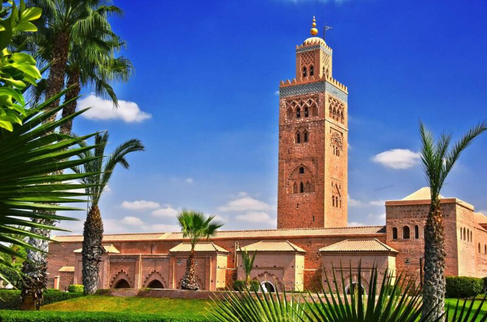
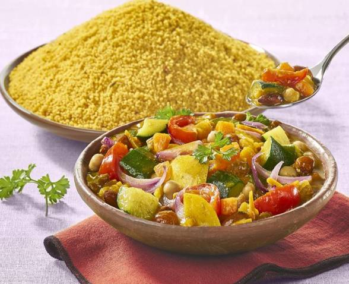
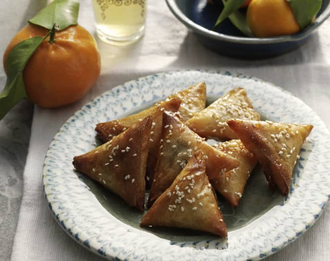

Historique
Située au pied des montagnes de l'Atlas, Marrakech est une ville marocaine riche en histoire, en tradition et en culture. Fondée au XIe siècle par la dynastie berbère des Almoravides, elle était autrefois un important carrefour commercial pour les caravanes venant du Sahara. Au fil des siècles, Marrakech est devenue un centre culturel majeur, attirant des artistes, des artisans et des intellectuels du monde entier. Sa médina médiévale, avec ses rues étroites, ses souks animés et ses palais somptueux, témoigne de son passé glorieux. Aujourd'hui, Marrakech continue de séduire les visiteurs avec son architecture élégante, sa cuisine savoureuse et son ambiance envoûtante, faisant d'elle une destination incontournable pour ceux en quête d'aventure et de découverte au Maroc.
Places emblématiques

La mosquée Koutoubia
La mosquée Koutoubia, située au cœur de Marrakech, est l'un des monuments les plus emblématiques de la ville. Construite au XIIe siècle sous le règne des califes almohades, cette mosquée majestueuse se distingue par son imposant minaret de 77 mètres de haut, visible de loin dans le paysage urbain. Ornée de détails architecturaux élégants et de motifs géométriques complexes, la Koutoubia est un chef-d'œuvre de l'art islamique et un symbole de la grandeur passée de Marrakech. Bien que l'accès à l'intérieur soit réservé aux fidèles musulmans, les visiteurs peuvent admirer sa beauté depuis l'extérieur et se promener dans les jardins paisibles qui l'entourent. Illuminée le soir, la mosquée offre un spectacle enchanteur, créant une atmosphère magique et mystique dans la ville.
Les jardins de Majorelle
Les jardins de Majorelle, nichés au cœur de Marrakech, sont un véritable joyau botanique. Créés par le peintre français Jacques Majorelle dans les années 1920, ces jardins offrent un refuge de tranquillité et de beauté. Avec leurs plantes exotiques, leurs bassins d'eau turquoise et leur architecture art déco, les jardins de Majorelle offrent une expérience visuelle époustouflante. Les allées ombragées invitent à la promenade, tandis que les bancs disséminés permettent de se détendre et de contempler la nature luxuriante. Une visite des jardins de Majorelle est un véritable enchantement pour les sens, offrant une évasion bienvenue de l'agitation de la ville.

Le palais de la Bahia
Le palais de la Bahia, situé au cœur de la médina de Marrakech, est une merveille architecturale qui témoigne de l'opulence passée des dirigeants marocains. Construit à la fin du XIXe siècle par le grand vizir Si Moussa, ce palais somptueux est un exemple remarquable de l'artisanat traditionnel marocain. Ses vastes cours intérieures, ses jardins luxuriants et ses salles richement décorées impressionnent par leur beauté et leur raffinement. Les visiteurs peuvent explorer ses nombreux pavillons, ses fontaines ornées et ses plafonds sculptés, découvrant ainsi l'histoire fascinante de ce lieu emblématique. Le palais de la Bahia offre également un aperçu de la vie luxueuse des élites marocaines de l'époque, avec ses somptueux salons, ses appartements richement meublés et ses salles de réception opulentes. Une visite de ce palais magnifique est une plongée dans le passé glorieux de Marrakech et un incontournable pour les amateurs d'histoire et de culture.

La place Jemaa el-Fna
La place Jemaa el-Fna, située au cœur de la médina de Marrakech, est un véritable spectacle vivant où se mêlent traditions, couleurs et saveurs. De jour comme de nuit, cette place emblématique offre une expérience sensorielle unique, avec ses étals de fruits frais, ses jus d'orange pressés à la minute et ses délices culinaires marocains. Les charmeurs de serpents, les conteurs, les musiciens et les danseurs animent l'atmosphère, créant une ambiance envoûtante et authentique. Les visiteurs peuvent se perdre dans les dédales des souks environnants, découvrir l'artisanat local et déguster des spécialités culinaires traditionnelles. La place Jemaa el-Fna est un véritable carrefour culturel où se rencontrent les traditions séculaires et la vie moderne, offrant aux visiteurs une immersion inoubliable dans la culture marocaine.
Plats locaux
Le tajine
Le tajine, plat emblématique de la cuisine marocaine, incarne la richesse des saveurs et des traditions de Marrakech. Cuisiné lentement dans un récipient en terre cuite du même nom, le tajine est un mélange harmonieux de viande tendre, de légumes parfumés et d'épices exotiques. Chaque bouchée offre une explosion de goûts qui transporte les convives dans un voyage gustatif authentique. Souvent agrémenté d'olives, de citrons confits ou de fruits secs, le tajine est un festin pour les sens, symbolisant la convivialité et le partage au cœur de la culture marocaine. Que ce soit dans les riads traditionnels ou les restaurants modernes de Marrakech, déguster un tajine est une expérience culinaire inoubliable qui célèbre l'héritage gastronomique de cette ville fascinante.

Le Harira
Le Harira est une soupe traditionnelle marocaine, appréciée pour sa saveur riche et ses ingrédients nourrissants. Préparée principalement à base de tomates, de pois chiches, de lentilles, de viande (souvent de l'agneau ou du bœuf), de coriandre fraîche et d'autres épices aromatiques, cette soupe est un pilier de la cuisine marocaine, particulièrement pendant le mois sacré du Ramadan. Sa consommation est courante pour rompre le jeûne, car elle est riche en nutriments et en énergie, offrant une sensation de satiété et de réconfort. La texture veloutée du Harira, combinée à ses saveurs complexes, en fait une expérience culinaire réconfortante et inoubliable, souvent accompagnée de dattes et de délicieuses pâtisseries pour compléter le repas. Au-delà de sa fonction nourrissante, le Harira est également considéré comme un symbole de générosité et de partage, renforçant les liens familiaux et communautaires pendant les périodes de célébration religieuse.

Les Briouats
Les Briouats sont de délicieuses petites pâtisseries marocaines qui combinent des saveurs sucrées et salées dans une coque croustillante. Elles sont préparées en enveloppant une farce savoureuse (viande, fruits de mer, légumes ou amandes) dans de fines feuilles de pâte filo, puis frites jusqu'à ce qu'elles soient dorées et croustillantes. Ces petites bouchées sont souvent servies en entrée lors des repas festifs ou en accompagnement lors des célébrations spéciales. Leur forme triangulaire est caractéristique et rappelle souvent celle des samosas. Les Briouats sont appréciés pour leur combinaison de textures, avec un extérieur croustillant et un intérieur moelleux et savoureux. Ils sont également souvent saupoudrés de sucre glace ou arrosés de miel avant d'être servis, ajoutant ainsi une touche de douceur supplémentaire à ces délices marocains.
